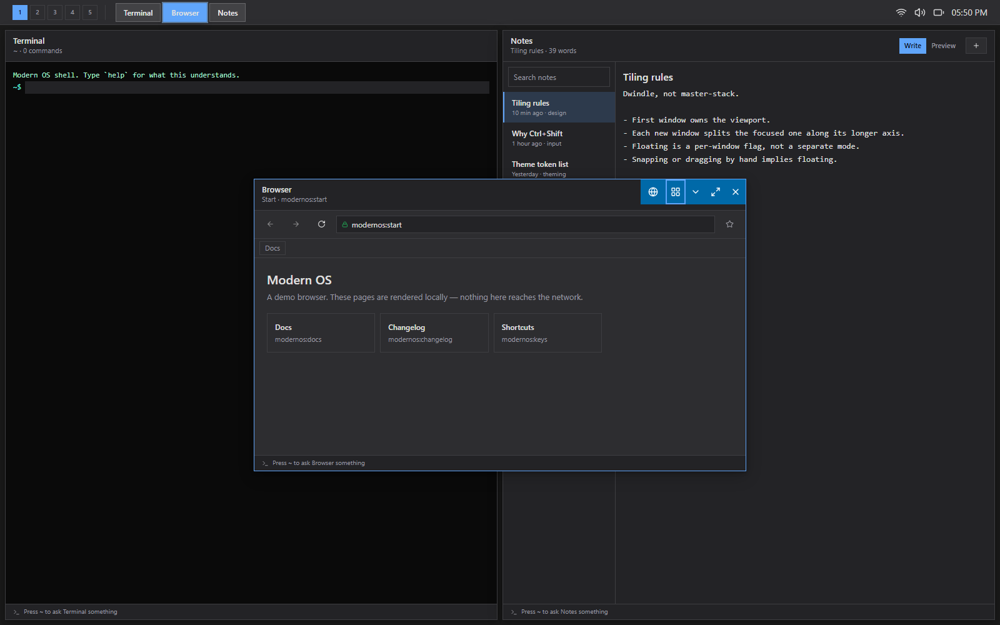
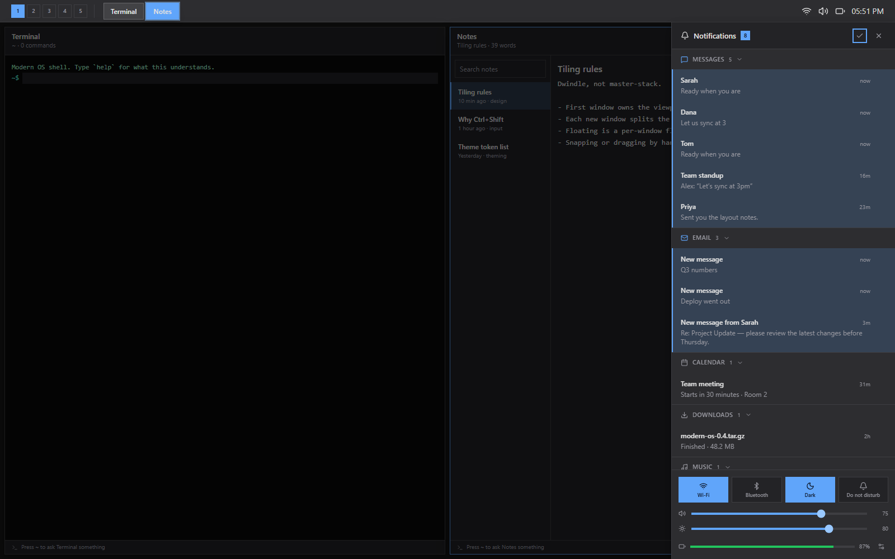
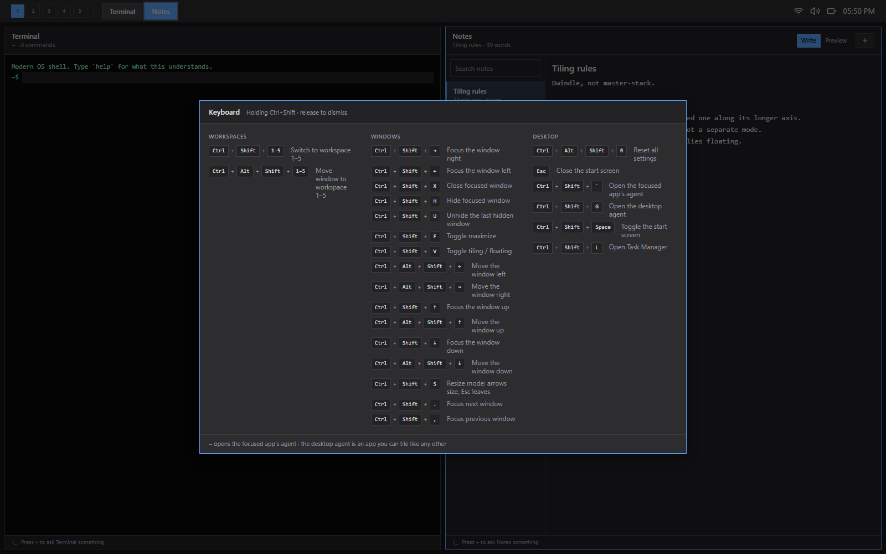

Live
Boot it here.
The real thing, running in the page. Click a tile to open an app, press Ctrl+Shift+←→ to move focus between tiled windows, hold Ctrl+Shift to see every binding, or open the notification panel from the taskbar status cluster. Nothing is recorded and nothing is saved to a server — it is all running in your browser.

best on a wide screen open full screen ↗
app.launch
Tiles are alive.
There are no icons. Every app is a colored tile carrying its own state — CPU load, disk usage, query rate, unread count, download progress — and it animates when that changes. Updates speak a small vocabulary: flip when something is replaced, slide for the next item in a sequence, roll for a number that should count rather than cut, and an attention ring for the few that genuinely want you. The board fills downward and grows to the right; type to filter it.
tile.longPress
A tile is a format, not a decoration.
The tile configurator treats a tile as a layout problem with a budget. Pick a span and it reports the exact geometry; the span buys a number of widget slots, and each widget spends them. A 1×1 tile has no slots and says so. Clocks, progress bars, a media player and a task list are all fitted against the same accounting.

- grid
- 6 flexible columns, 96px rows
- 1×1 tile
- 193 × 96px, 169 × 72 content
- 4×2 tile
- 797 × 200px, 8 widget slots
- padding
- 12px, all four sides
window.tile
Tiling by default, floating when you say so.
The first window owns the viewport; each new one splits the focused window along its longer axis. There are no title bars in tile mode — the layout owns the geometry, so a drag handle would be a lie and the space goes to the app. The tiling engine is a pure function from a workspace's window list to rectangles, called inside the reducer.

Snapping or dragging by hand implies floating, because you cannot drag something the layout is positioning for you. Ctrl+Shift+V pops a window out, and it grows a title bar on the way.

notification.new
A panel, not a takeover.
Notifications group by app, so twelve of them read as three sources rather than a wall. Each one dismisses on its own, unread is an accent edge that survives a dense list, and the times are real and tick while the panel is open. It is a column beside your work, not a sheet over it — on a tiling desktop, the thing it would cover is the layout you were reading.

keymap
The keyboard is the interface.
$mod is Ctrl+Shift, because Windows swallows Super+digit before a browser tab ever sees it. Bindings are data in one registry with a scope stack, and a dev-time audit warns when a chord resolves to something the browser or the OS takes first. Hold Ctrl+Shift and the current bindings appear, read from the live keymap rather than a written-down copy, so the sheet cannot drift from what the desktop does.

- $mod+1..5
- switch workspace
- $mod+arrows
- focus that way
- $mod+Alt+arrows
- move the window
- $mod+S
- resize mode
Under the shell
The apps are tenants. The system is the project.
Most of the code is not in the apps — it is in the layer they sit on. The rule the layering enforces: UI dispatches actions and reads selectors; it never mutates window state directly. That is what let the tiling engine drop in as a pure function without a single component learning it existed.
Kernel
src/kernel/
Observable store, pure reducer, typed actions, memoised selectors — the single source of truth for every window.
Window machine
kernel/windowState.js
Placement (tiled/floating) × display (normal/minimized/fullscreen) as a total transition table that refuses rather than invents.
Tiling engine
kernel/layout/bsp.js
A binary tree per workspace. tree => Map<windowId, rect>, pure, called after anything that changes the set.
Keymap
src/services/keymap.js
Chord parsing, a scope stack so a modal shadows the desktop, hold detection, and an audit for chords the browser takes first.
Theme + motion
src/services/theme.js
Colour, shape, depth and motion tokens. Every animation asks permission: reduced drops decorative movement, none stops it.
Tile feeds
src/features/tiles/
Nineteen simulated sources, the animation vocabulary, and one scheduler that keeps them from all moving at once.
Run it
Clone, install, boot.
Vite dev server on port 5173. No backend, no accounts, no build step beyond the bundler.
# get it running locally git clone https://github.com/monstercameron/Modern_os.git cd Modern_os npm install npm run dev # rebuild this site's live demo npm run build:pages
Status
What's finished and what isn't.
The shell is the mature half, and it is now most of the way there. The gaps that are left are named rather than hidden.
Working
- BSP tiling with floating opt-out
- Five workspaces, keymap and cheatsheet
- Live tiles: 19 feeds, 5 animations
- Notification panel, grouped and dismissable
- Per-app and desktop agents
- All 36 apps render real content
Known gaps
- Taskbar and start screen ignore theme tokens
- Unhide is last-in-first-out with no picker
- No control over split direction
- Settings: only Personalization is wired
Next
- Theme tokens through the whole shell
- A window picker for hidden windows
- Split-direction control before opening
- Drag-to-swap between tiled panes